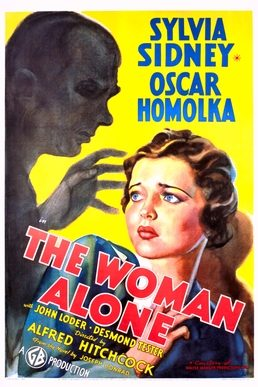

Sabotage
Starring: Sylvia Sidney, Oskar Homolka, John Loder
Director: Alfred Hitchcock
Writer: Charles Bennett, Helen Simpson, Alma Reville
Producer: Michael Balcon
Sabotage, released in the United States as The Woman Alone, is a 1936 British spy thriller film directed by Alfred Hitchcock starring Sylvia Sidney, Oscar Homolka, and John Loder. It is loosely based on Joseph Conrad's 1907 novel The Secret Agent, about a woman who discovers that her husband is a terrorist agent.
Trivia
- Based on The Secret Agent (novel by Joseph Conrad).
- Hitchcock wanted to cast Robert Donat – with whom he had previously worked in The 39 Steps (1935) – as Spencer, but was forced to cast another actor (John Loder) owing to Donat's chronic asthma.
- According to Hitchcock, in his interviews with the French director François Truffaut, Alexander Korda, to whom Donat was under contract, refused to release him.
- Hitchcock, who was not happy with Loder's casting, later commented, "The actor we got wasn't suitable, and I was forced to rewrite the dialogue during the shooting". Charles Bennett says Sylvia Sidney was upset when Loder was cast because she agreed to make the film to work with Donat.
Previous Showings
10 Runs • 8 Festivals
All runs on record (10):
- April 23 - 24, 1990w/ The Man Who Knew Too Much (1934)
- June 4 - 8, 1993w/ The 39 Steps
- February 12 - 16, 2000Alfred Hitchcock Film Festivalw/ Secret Agent
- April 15 - 17, 2005Alfred Hitchcock, April 2005w/ Strangers on a Train
- August 30 - 31, 2007Summer 2007, including Films Starring Fred Astairew/ Green for Danger
- April 13 - 15, 2018Hitchcock and Other Masters of Suspense, plus Frankenstein at 200w/ Rebecca
- April 3 - 4, 2019Hitchcock, Master of Suspensew/ The Man Who Knew Too Much
- April 25 - 26, 2024Hitchcock, The Master of Suspense 2024w/ Young and Innocent
- June 25 - 26, 2025Hitchcock, The Master of Suspense 2025w/ Young and Innocent
- May 7 - 8, 2026Hitchcock, The Master of Suspense 2026w/ Saboteur